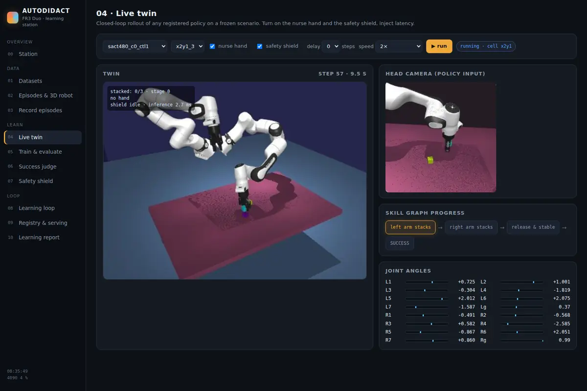

AUTODIDACT: a robot learning loop that teaches itself
Most teams fine-tune a model and report one success rate. We built the system around the model: it checks the data, trains, tests, finds out what is missing, asks for exactly that data, retrains, and only keeps the new model if the statistics show it is better.
Event
Siemens Healthineers Robotics & AI Hackathon 2026, Erlangen
Challenge
Teach the Robot: build the autonomous learning loop
Robot
Franka FR3 Duo, two 7-joint arms with Robotiq grippers, simulated in MuJoCo
Time
Two working days, 22–23 October 2026, as a team

The learning station: the simulated robot cell, the camera image the policy sees, and live joint angles.
The problem
The organisers want robots that learn new tasks from demonstrations instead of being programmed, motivated by the shortage of nurses in cardiac catheter labs. They did not ask for a robot that does one task. They asked for the loop that creates, evaluates and deploys new robot skills. Our test task was stacking cubes with two arms.
How the loop works
Check the data. A validator reads every demonstration episode and gives each problem a reason code.
Train. ACT is the small, fast model that drives the loop. SmolVLA, a vision-language-action model, is fine-tuned on the organisers' real-robot data.
Test. Every model runs on the same frozen set of 72 scenarios in a simulated copy of the robot cell.
Find the gaps. A table area gets a data request if the policy is weak there and has few demonstrations there.
Collect and retrain. A scripted expert records exactly the requested demonstrations and the model is retrained.
Gate. The new model replaces the old one only if the lower end of the 95% confidence interval of the improvement is above zero.
Results
What we measured
Result
Scenarios solved on the frozen 72-scenario test, before and after one loop cycle (average of two seeds)
7 → 21.5
Improvement in success rate accepted by the gate, with 95% confidence interval
+0.20 (+0.10 to +0.30)
The same cycle run fully automatically: 239 demonstrations requested, no human input
+0.20 (+0.12 to +0.29)
Runs in which the arm touched a simulated hand moving into its path, without and with our safety filter (of 40)
24 → 0
SmolVLA on 45 held-out real episodes: average error against the expert's actions
0.0086 rad
What did not work
In the first cycle the retrained model was worse. The gate rejected it, and the cause turned out to be under-training.
SmolVLA is accurate offline on real episodes, but in closed loop in our simulator it does not yet grasp (0 of 72).
The automatic success judge rarely calls a failure a success, but it misses many real successes, so unclear cases go to a person.
The safety result holds for the one scenario we measured. We do not claim the robot is safe in general.
My part
This was a team project. I contributed across the data checks, the simulation twin, policy training and evaluation.